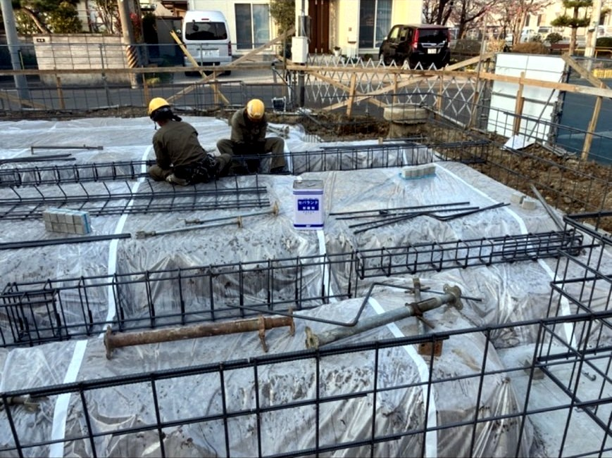
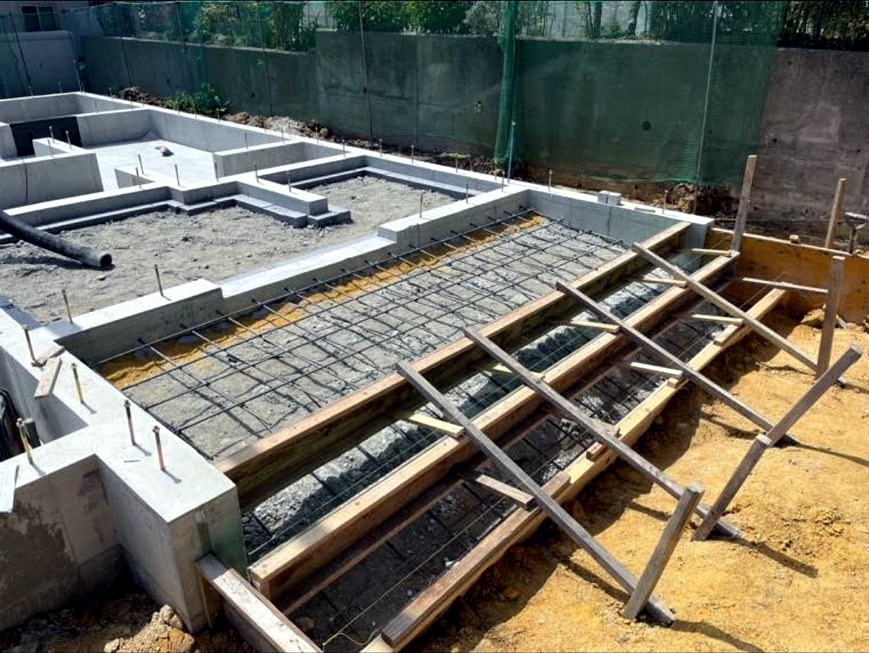
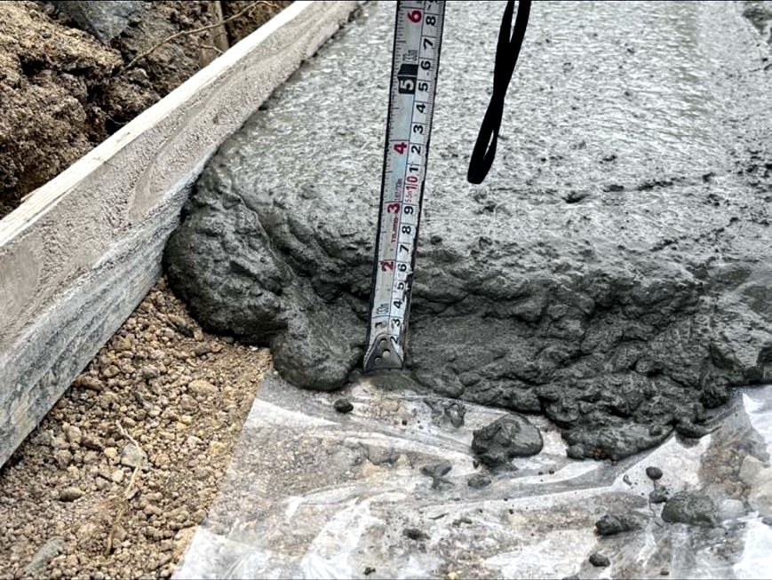
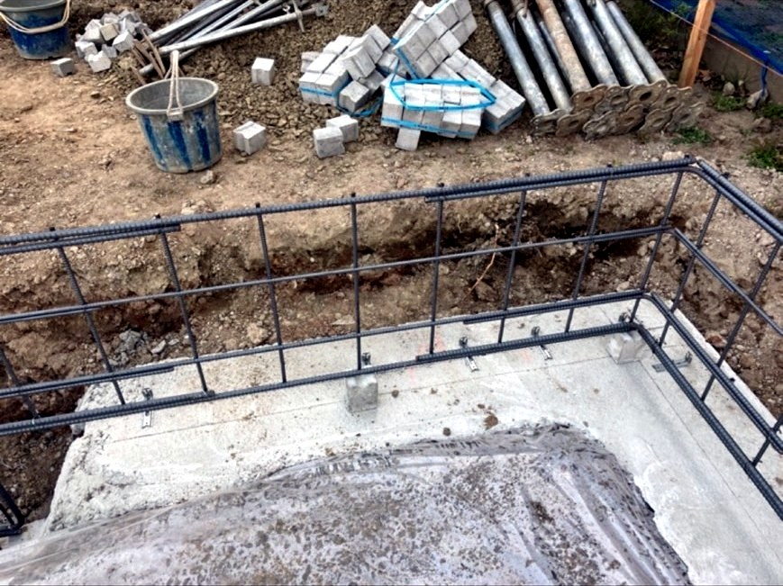
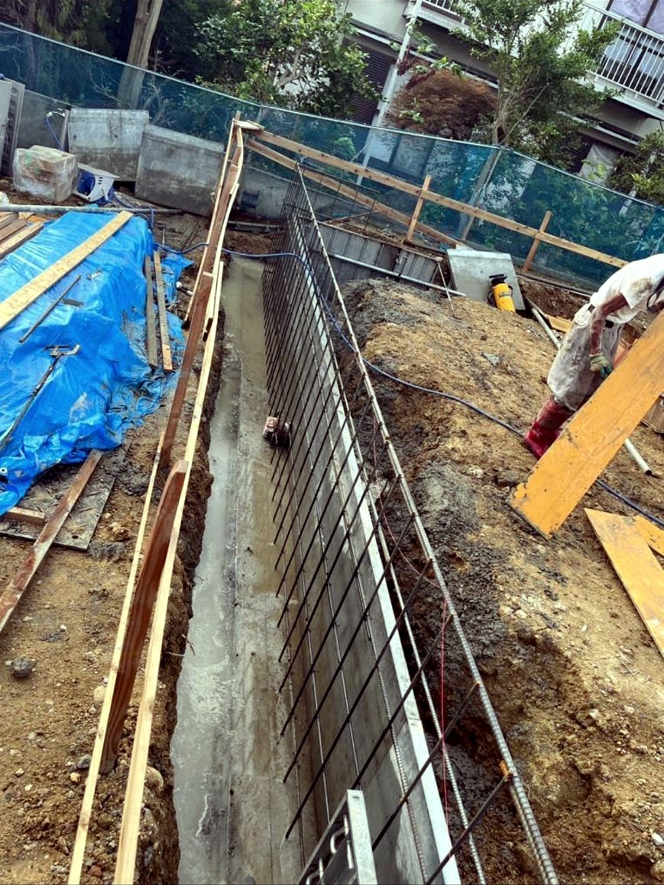

STEP 01
配筋
構造図に基づき、鉄筋を一本ずつ正確に組み上げます。基礎の強度を左右する、最も神経を使う工程です。防湿シートを敷き、湿気から建物を守ります。
Works
仙台市内・新築戸建住宅の基礎工事。建物の重さを支え、地震にも耐える基礎は、 目に見えなくなる場所だからこそ、一つひとつの工程を確実に積み上げることがすべてです。 ここでは、実際の現場でどのように仕事を進めているかをご覧いただけます。

構造図に基づき、鉄筋を一本ずつ正確に組み上げます。基礎の強度を左右する、最も神経を使う工程です。防湿シートを敷き、湿気から建物を守ります。

寸法通りに型枠を建て込み、ベースとなるコンクリートを打設します。わずかな狂いも許さず、水平・垂直を徹底して管理します。

打設後は、コンクリートの厚みを一箇所ずつ実測で確認。「無事故・無欠陥で完工する」ため、記録を残しながら品質を担保します。

立上り部を仕上げ、土台を固定するアンカーボルトを正確な位置に据えます。この一手間が、上に建つ家の耐久性を決めます。

高低差のある敷地での擁壁・深基礎工事。土を留め、地盤を安定させる土木工事にも対応します。 深い掘削と大規模な配筋を要する現場でも、住宅基礎で培った正確さと安全管理をそのまま活かし、 確かな構造物を築きます。